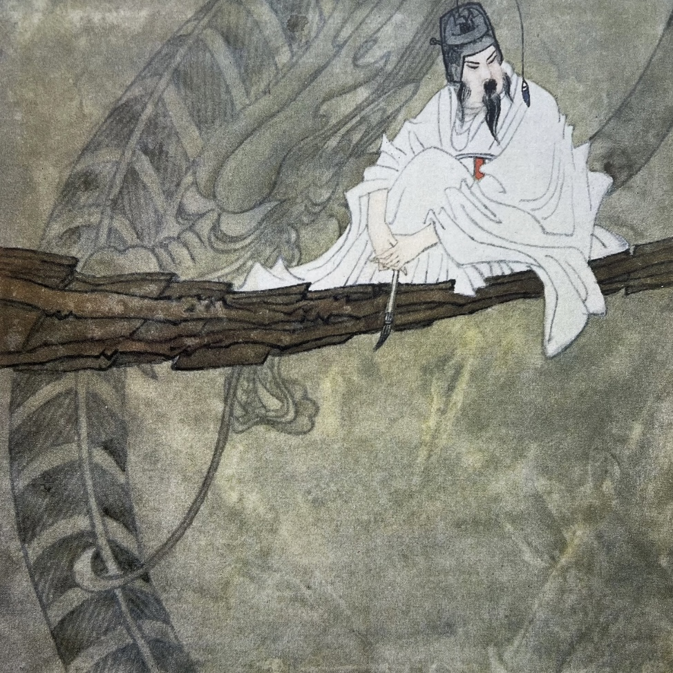

画龙点睛 (huà lóng diǎn jīng)
以下是基于成语 “画龙点睛” 生成的文生视频，包括4-6张关键帧图片及描述。
关键帧描述
- 关键帧 1：龙的轮廓被画出，盘绕在云间。
- 关键帧 2：画师专注地绘制龙的鳞片。
- 关键帧 3：画龙即将完成，只差点睛。
- 关键帧 4：画师手握画笔，为龙点睛。
- 关键帧 5：龙的眼睛焕发光彩，赋予生命力。
- 关键帧 6：龙冲破画卷，腾云而去。
生成的关键帧

文生视频
视频配乐与解说
配乐：《克罗地亚狂想曲》，一首激昂的乐曲，配合画龙点睛的氛围，增添画面的动感和张力。
解说：结合成语的背景故事，以文字形式叙述关键帧内容。